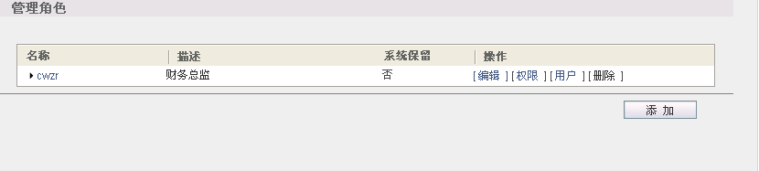
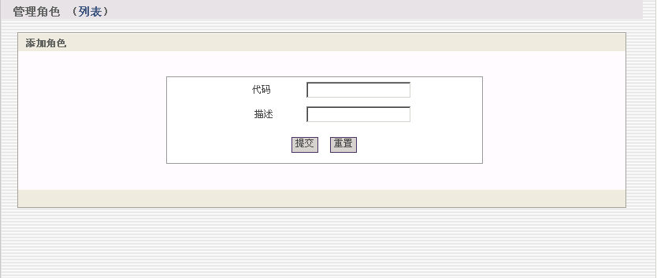
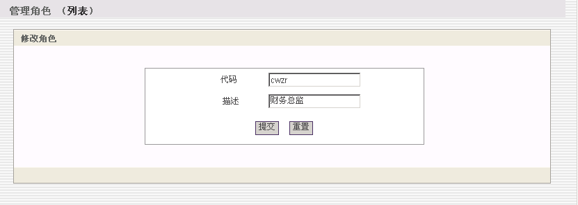
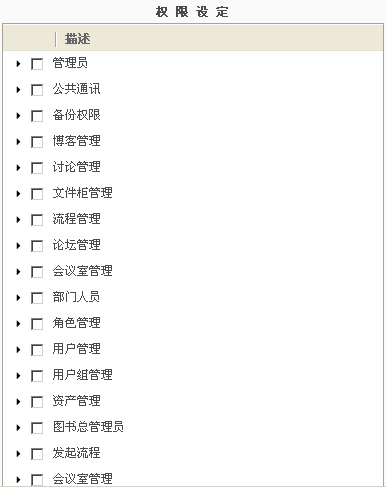

角色管理
进入OA左侧功能菜单：超级管理→权限管理→角色管理。角色是指组织中某一类责任
1、 添加、编辑、删除角色

图（1）
添加角色: 点击“添加”按钮后出现如下图所示 :

图（2）
输入“编号”和“描述”提交，即可添加角色。
编辑用户组：点击“编辑”出现下图所示：

图（3）
2、管理角色权限。找到要赋予权限的角色记录，点击操作列中的“权限”，进入该用户的权限管理页面。
权限设定。是把一个或多个权限赋予该角色。

图（4）